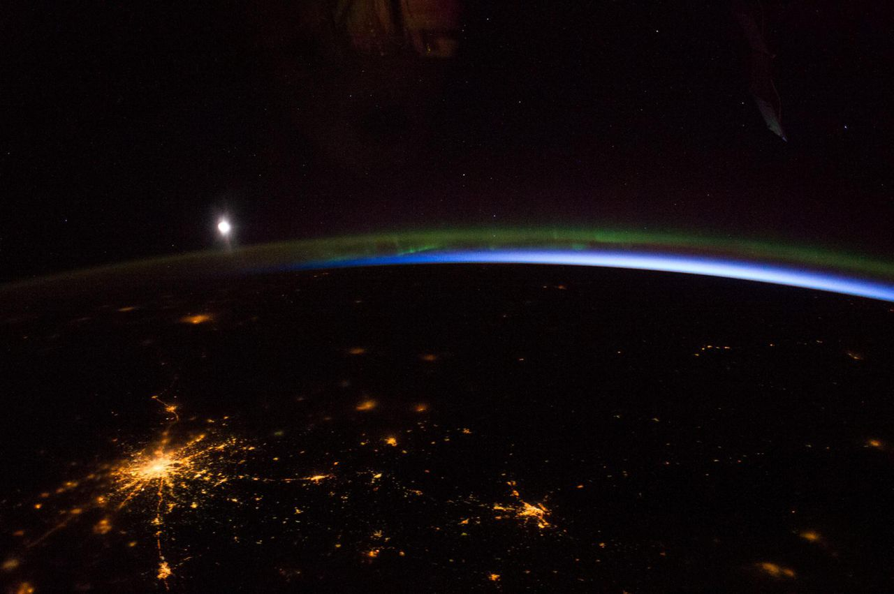

A LOCAL GUIDE TO THE NIGHT SKY
Some nights deserve
an audience.
Find what’s worth stepping outside to see.
From where you are. At just the right time.
Worth seeing tonight
Checking available local opportunities…
Coming up
Different opportunities, in time order · next seven days
On the launch calendar
Global schedules · local visibility unknown
Data & calculation notices
Observing plan
Selected opportunities, in time order. The file is built in this browser: nothing is uploaded, no account is needed, and Worth Looking Up cannot change your calendar itself. Re-downloading after a schedule changes keeps the same entry identifier, but a calendar app may still show both copies.
What is worth going outside for
Choosing a planning window…
What changed recently
Calculated but not prioritised
Where these numbers come from
Let’s see what’s overhead.
Checking orbital data and the forecast for your observing location.
Know when to step outside.
Worth Looking Up tells you what satellites are actually worth going outside to see from a specific location. It combines real orbital geometry with real observing conditions — sunlight, darkness, weather and elevation — instead of just listing everything that crosses the sky.
What does Worth Looking Up watch?
- The International Space Station and Tiangong, the two crewed stations.
- Bright satellites from CelesTrak's "100 (or so) brightest" catalog.
- Recent launches from the last 30 days, clearly labeled as brightness-uncertain.
- Starlink trains — newly launched Starlink groups that still fly close enough together to appear as a line of moving lights. Worth Looking Up groups spacecraft by actual launch, checks whether they still form a coherent train from your location, and presents the whole formation as a single event with its own train score.
Worth Looking Up plans seven nights ahead, and the Best Thing This Week panel answers two separate questions: which single event is the best of the next seven nights, and whether it is genuinely exceptional or simply the best of an ordinary week.
What are these satellites?
Worth Looking Up enriches the spacecraft it highlights — the Best Thing This Week winner and any event you open — with public catalog and mission metadata, so an unfamiliar name becomes “a NASA Earth-observation satellite launched in 1999” instead of a mystery. Structured identity (owner, object type, launch date and site, NORAD and COSPAR identifiers) comes from CelesTrak's SATCAT; operator, mission category and a short plain-English description come from Wikidata. Lookups are made on demand for the objects you are actually looking at, never for the whole catalog, and are cached for 21 days because mission identity rarely changes. When nothing can be resolved, the event is still shown — Worth Looking Up never invents a mission purpose.
What does “visible” mean?
A satellite is only worth looking for if more is true than simply being above the horizon. Worth Looking Up checks the pass elevation against your minimum, whether the spacecraft is actually in sunlight while your sky is dark (Sun 6° or more below the horizon), how long it stays usefully high, the object's brightness category, and the forecast cloud cover, visibility and precipitation at your location.
Buildings, trees, haze, spacecraft orientation and the limits of brightness modeling can still prevent a sighting. Worth Looking Up's answer is an honest recommendation, not a guarantee.
How does the score work?
Each event gets a 0–100 recommendation score from geometry (how high it climbs), useful duration, full sunlight on the spacecraft, darkness at your location, your forecast weather, and the object's brightness category. No precise apparent magnitude is claimed. When the weather forecast is missing, weather points are omitted and the score is marked provisional.
Starlink trains are scored separately: the number of simultaneously illuminated satellites, how tightly they are grouped (median spacing and apparent span), elevation, the strong-viewing-window length, darkness and weather. A train's age since deployment is shown as context; it is never the dominant scoring rule.
Starlink Train Watch
Right after a SpaceX launch, the deployed satellites fly in a tight line and can look like a moving "string of pearls." Over the following days they spread apart. Worth Looking Up groups satellites from the same SpaceX launch (by international designator), uses fresh orbital data — preferring CelesTrak's supplemental elements computed from SpaceX's own ephemerides — to determine whether they still appear as a coherent train from your location. Launch or deployment age is shown when the source data supports it; CelesTrak provides a launch date, not a precise deployment timestamp, so ages read as approximate. Cohorts are classified Fresh Train, Dispersing Train, Weak Train or Dispersed — only the first three are surfaced as events. If the orbital elements are stale, the score is capped and the event is labeled uncertain rather than pretending precision.
Your location and privacy
- All orbital propagation, scoring and train detection run locally in your browser. No account, no API key.
- Saved locations, favorites and preferences stay on this device (browser storage, up to 12 saved sites).
- Your geographic coordinates are needed to calculate what passes overhead. Coordinates are sent to Open-Meteo for weather forecasts and timezone lookup, and to its geocoding service only when you search for a place. CelesTrak requests contain no information about you.
- Satellite identity lookups use only spacecraft identifiers (NORAD catalog number and international designator), never your observing location. CelesTrak requests contain no information about you.
- This page includes the repository's Analytics Lite page-view tracker. Map tiles load only when you open a map.
Planets, meteor showers, comets and eclipses
Worth Looking Up also answers a wider version of the same question: what is worth going outside to see in the sky above this location tonight, this week, or over the next three months? Choose a category under the tabs — Satellites, Rocket Launches, Planets & Alignments, Meteor Showers or Comets & Special Events — and pick a planning window with TONIGHT, NEXT 7 DAYS or NEXT 90 DAYS.
- Planets & alignments — real geometric calculations of where each planet is, which of them share one observing window, how close two of them appear, when a planet is at opposition, when Mercury or Venus is at greatest elongation, and when the Moon passes a planet. Groupings are described as planets spread along the ecliptic, because that is what is actually happening; they never form a literal line in space.
- Meteor showers — the published IMO Meteor Shower Calendar for the current year (activity dates, peak solar longitude, radiant, velocity, population index and ZHR), combined with this location's real twilight, the radiant's altitude through the night and the Moon's phase, position and separation. ZHR is shown as the standardized reference number it is; no meteor count is predicted for you, because shower rates vary by an order of magnitude from night to night.
- Rocket launches — the published schedule for orbital launches worldwide, with the provider's own mission name, vehicle, provider, launch site, scheduling precision and status. A scheduled launch is listed because it is scheduled, not because it will be visible from where you are: Worth Looking Up shows how far the pad is and where the Sun will be, and labels local visibility unknown, because confirming a visible rocket or an illuminated exhaust plume needs the ascent trajectory, which is not published. Launch schedules never enter the satellite or celestial scores.
- Comets & special events — comets from the JPL Small-Body Database that are potentially observable, positioned from a published JPL Horizons ephemeris and, outside that window, from a validated two-body propagation of the published orbital elements. Measured brightness (from the Comet Observation Database) is always shown separately from a catalog magnitude prediction, and a comet with no recent measurement says so. Eclipses appear here with their local circumstances.
The three kinds of uncertainty
Every event card separates three different things that are often collapsed into one misleading score:
- Position certainty — how reliable the geometry is. Planetary positions and eclipses are validated against JPL Horizons to better than 30 arcseconds. A meteor radiant is a published catalogue value good to a few degrees. A comet position read from a published Horizons ephemeris is authoritative; a comet propagated from years-old elements is labelled approximate.
- Observing suitability — a 0–100 value from the object's altitude, the darkness actually available at your location, moonlight interference, what equipment is needed and how unusual the circumstance is. A weather forecast only contributes inside the few days it is meaningful for.
- Phenomenon predictability — how predictable the thing itself is. Planetary geometry is deterministic. Meteor activity is statistical. Comet brightness is genuinely uncertain and can miss a prediction by several magnitudes.
Rules the planner follows
- Nothing is invented to fill the screen. A quiet night produces an explanation, not a fabricated event.
- An event is only offered when it is genuinely above your minimum altitude during real darkness at your location; eclipses and lunar events are checked against the horizon at mid-event.
- Uranus and Neptune are always labelled telescope-only. Mercury is never described as easy when it hugs the Sun.
- Meteor showers and comets that come from a published dataset that has expired are refused rather than re-used for the current year.
- Forecasts are never extrapolated across weeks, and the page says so where the score stops using weather.
Where does the data come from?
- CelesTrak — orbital elements (GP/OMM), the bright-satellite and recent-launch catalogs, supplemental Starlink elements derived from SpaceX public ephemerides, and SATCAT object identity (owner, object type, launch date/site, identifiers).
- Open-Meteo — hourly weather forecasts, timezone resolution and place search.
- Wikidata — structured mission metadata (operator, mission category, short description, source link) for selected objects, queried on demand by NORAD/COSPAR and cached locally.
- satellite.js — local SGP4 orbital propagation.
- SunCalc — sun and moon position calculations.
- MapLibre — optional map rendering, loaded on demand with OpenStreetMap tiles.
How is this built?
Worth Looking Up is a single-page, client-side application in vanilla JavaScript. Orbital propagation runs in a background worker so the page stays responsive; scoring and train classification are deterministic — no AI or language model is involved in any recommendation. Source data is cached locally with explicit freshness tracking, and stale caches are recovered rather than silently trusted. Light and dark themes are both first-class.
Accuracy and limitations
- Orbital element predictions degrade as data ages; newly deployed spacecraft can maneuver.
- Brightness is partly heuristic — a catalog category is not a promise of naked-eye visibility, and apparent brightness depends on spacecraft orientation.
- Clouds and haze can differ from the forecast; terrain, buildings and trees are not modeled.
- Starlink deployments can change rapidly; train predictions are the most sensitive to element age.
- Worth Looking Up is an observing aid for curious people. It is not an operational aerospace or navigation system.
- Mission metadata covers objects that public sources describe. Satellites, rocket bodies and debris with no catalog description show only verified structured fields — or nothing at all.
Version
Worth Looking Up · Full algorithm and validation notes →
Built for people who occasionally need a reason to look up.
Worth looking up for
Calculating your eveningComparing seven nights of observations…
The night at a glance
All times at your locationOther cool stuff tonight
How the recommendation works
The night’s score is the best remaining satellite opportunity among your selected categories. It is not a weather score. A “likely visible” segment needs at least 20 seconds above your minimum elevation, with the Sun at least 6° below the horizon and the spacecraft fully sunlit. Buildings, trees, haze and object orientation can still prevent a sighting.
Base points: elevation 25, useful visible duration 15, sunlight 10, observer darkness 15, brightness category 10, cloud cover 20, and visibility 5. Cloud, poor visibility and rain then reduce the total. Unknown weather earns no weather points and makes the result provisional. No precise apparent magnitude is claimed. Full algorithm, validation and limitations →
The Moon panel is informational and does not raise the satellite score. A quiet satellite night can still be a lovely night for stargazing.
Data & diagnostics
Import up to 2 MB of orbital elements from a trusted source if CelesTrak is unavailable. Imported records stay in this session and use their actual epoch; records more than 14 days from a prediction are excluded.